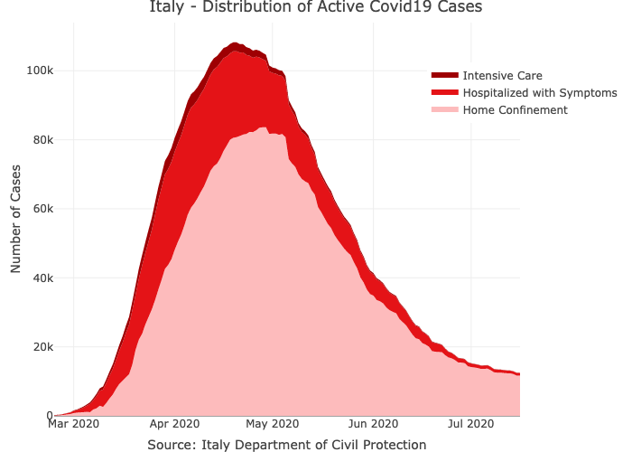
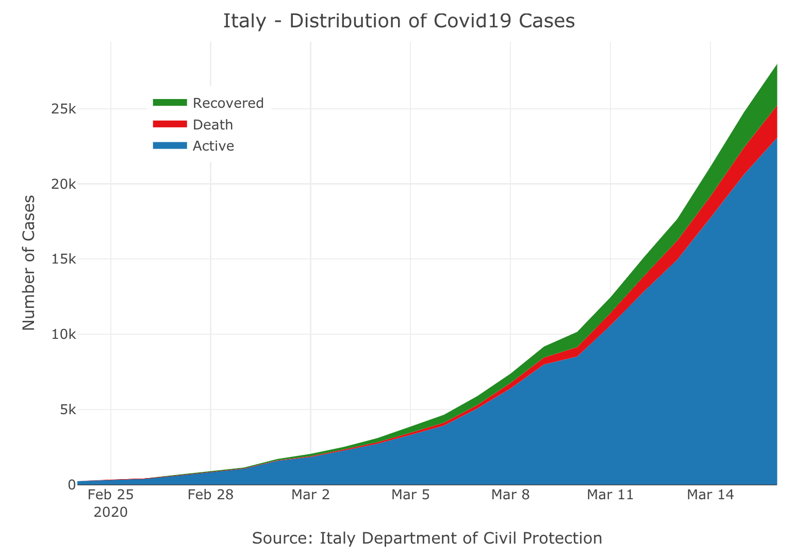

The covid19italy R package provides a tidy format dataset of the 2019 Novel Coronavirus COVID-19 (2019-nCoV) pandemic outbreak in Italy. The package includes the following three datasets:
-
italy_total- daily summary of the outbreak on the national level -
italy_region- daily summary of the outbreak on the region level -
italy_province- daily summary of the outbreak on the province level
Installation
You can install the released version of covid19italy from CRAN with:
install.packages("covid19italy")And the development version from GitHub with:
# install.packages("devtools")
devtools::install_github("RamiKrispin/covid19Italy")Usage
library(covid19italy)
data(italy_total)
head(italy_total)
#> date hospitalized_with_symptoms intensive_care total_hospitalized
#> 1 2020-02-24 101 26 127
#> 2 2020-02-25 114 35 150
#> 3 2020-02-26 128 36 164
#> 4 2020-02-27 248 56 304
#> 5 2020-02-28 345 64 409
#> 6 2020-02-29 401 105 506
#> home_confinement total_currently_positive new_currently_positive recovered
#> 1 94 221 221 1
#> 2 162 311 90 1
#> 3 221 385 74 3
#> 4 284 588 203 45
#> 5 412 821 233 46
#> 6 543 1049 228 50
#> death total_positive_cases total_tests
#> 1 7 229 4324
#> 2 10 322 8623
#> 3 12 400 9587
#> 4 17 650 12014
#> 5 21 888 15695
#> 6 29 1128 18661Plotting the active cases distribution
library(plotly)
plot_ly(data = italy_total,
x = ~ date,
y = ~home_confinement,
name = 'Home Confinement',
fillcolor = '#FDBBBC',
type = 'scatter',
mode = 'none',
stackgroup = 'one') %>%
add_trace( y = ~ hospitalized_with_symptoms,
name = "Hospitalized with Symptoms",
fillcolor = '#E41317') %>%
add_trace(y = ~intensive_care,
name = 'Intensive Care',
fillcolor = '#9E0003') %>%
layout(title = "Italy - Distribution of Active Covid19 Cases",
legend = list(x = 0.1, y = 0.9),
yaxis = list(title = "Number of Cases"),
xaxis = list(title = "Source: Italy Department of Civil Protection"))

Plotting the daily cases distribution
plot_ly(data = italy_total,
x = ~ date,
y = ~total_currently_positive,
name = 'Active',
fillcolor = '#1f77b4',
type = 'scatter',
mode = 'none',
stackgroup = 'one') %>%
add_trace( y = ~ death,
name = "Death",
fillcolor = '#E41317') %>%
add_trace(y = ~recovered,
name = 'Recovered',
fillcolor = 'forestgreen') %>%
layout(title = "Italy - Distribution of Covid19 Cases",
legend = list(x = 0.1, y = 0.9),
yaxis = list(title = "Number of Cases"),
xaxis = list(title = "Source: Italy Department of Civil Protection"))
